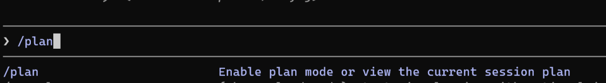

1. 把 Claude Code 当作初中级工程师来用
很多人对 Claude Code 最大的误解，就是觉得扔一句模糊指令，它就能啃下最复杂的骨头。
实际上，Claude 确实非常强大，但它无法读心。它在在处理定义明确、常规化的任务时表现更好；在处理非常抽象模糊的任务时，大概率会翻车
Claude Code 就像一名初中级工程师一样,
• 执行定义明确的任务时极其出色 • 但上下文模糊或过于臃肿时就会翻车
2. 把CLAUDE.md 作为你的控制层
CLAUDE.md 是一个包含 Claude Code 项目级指令的文件，能全局约束 Claude 的行为。不知道为什么，这反而是多数人最未充分利用的杠杆之一。
要想充分发挥 Claude Code 的潜力，你需要撰写一份 CLAUDE.md，其中：
• 定义设计系统规则 • 指定代码规范 • 包含"做/不做"的模式 • 引用关键文件的引用路径
比如：
## 设计系统规则
- 间距用 theme.ts 里的 token
- 颜色禁止写死
- Button 必须从 /components/ui/button 引入
## 代码规范
- 只用 TypeScript
- 函数式组件
- 禁止内联样式如果你在用设计系统，还应该在这个 markdown 文件中专门编写一个设计系统使用章节。不要让 Claude 在哪里瞎猜。
3. 复杂任务，先开“规划模式”
使用 Claude Code 时，别一上来就写代码（创建原型和写代码）。Claude Code 有个专门的规划模式（ Plan Mode），功能开发、代码重构、多步骤流程都应该先走一遍它。

我的实际的工作流如下：
1. 让 Claude 出一份计划 2. 审阅、打磨、补边界情况 3. 批准 4. 执行
这能让 Claude 先想清楚，而不是仓促堆出一坨能跑但难看的代码。
如果任务特别复杂，可以用 /ultraplan，它能最大化 Claude Code 的规划能力，你可以理解为“规划模式 Pro Max”。
4. 上下文窗口一定要盯紧
处理任务时，Claude Code 会为其创建上下文。它分析你提供的信息，并将其整合到上下文窗口中（即"AI 记忆"）。信息的质量和数量（上下文大小）都会影响 Claude Code 为你生成的输出。
核心公式：
Claude 的表现 ≈ 上下文质量 ÷ 上下文大小
上下文太脏、太大，输出就非常水；上下文干净、精准，输出就准确。
以下是保持上下文干净的几条规则：：
• 别把整个仓库扔进去：占空间，还分散注意力 • CLAUDE.md 简洁：指令太多就拆出去引用，比如 @components/Button.md• 定期清理：用 /compact压缩当前会话，切任务时用/clear重置
5. 任务拆到“原子”级别
Claude 确实能一口气帮你搭完整的系统。但问题是：你得迭代多少轮才能打磨好？
很多时候，把复杂任务拆成小块反而能获得更好的结果。
比如，对于一个系统功能，你可以拆成：
1. 创建登录 UI 2. 添加表单校验 3. 调用API 4. 处理错误状态
范围越小，Claude 表现越稳。
另一个坑：一次对话塞多个不相关任务。
修改这2个bug, 优化一下UI, 同时分析一下性能Claude 会怎么做？两个 bug 各修一半，UI 改进大概率被忽略，最后给你一团乱麻。
这就像给初级开发同时丢 3 个任务，还指望一次拿到干净产出，这不现实。
6. 用 Skills 固化重复套路
Skills 是可复用的 AI 剧本。无论是你还是 Claude，在需要完成特定任务时都可以触发相应的 skill。比如：
• design-system-audit（设计系统审计）• component-generator（组件生成器）• ux-critique（UX 评审）• accessibility-check（可访问性检查
创建 skill 时需要记住两条核心原则：
• 一个 Skill 只做一件事 • Skill 应该有明确的输入/输出
7. 用 AI Agents 自动化任务
Skills 是非常强大的机制，但 Claude Code 还提供了更先进的工具来简化你的设计流程：AI 智能体（AI agents）
你可以把 AI 智能体理解为：当你需要解决设计中的特定问题时所运行的程序。比如，你可以创建一个帮你做可用性测试、代码审查、UI/UX 审计等的 AI 智能体。
与 Skills 相比，智能体可以完全自主运行。例如，设计系统审计智能体可以在特定条件下（即设计系统发生变更时）自动触发，验证变更，并将报告分享给你。
8. 所有产出必须人工进行检查
Claude 跑得快，但不保证对。别掉进“AI 说的我都信”的陷阱。生产数据被污染的时候，后悔可来不及。
Claude = 生成器，你 = 验证器
你无法完全消除 AI 做错事的风险，但可以通过以下方式最小化风险：
• 在实现前先规划好逻辑 • 主动询问错误处理和边界情况 • 定期运行代码审计